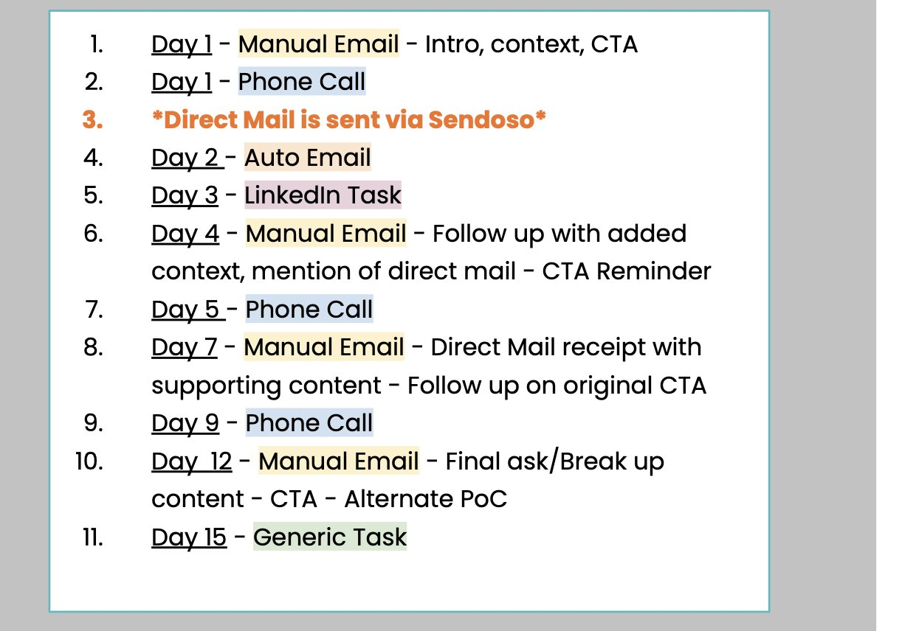
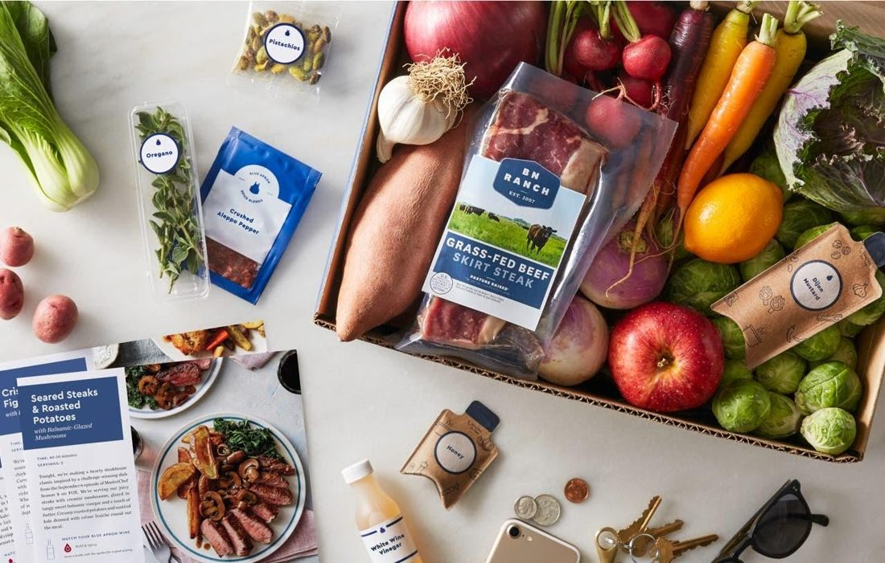

1:1 · High touch
Outreach · 1:1
Virtual Executive Lunch
The goal: build executive relationships at our highest-priority corporate and enterprise accounts, then create and accelerate opportunities.
The play: a 15-day sequence of manual emails, calls, and LinkedIn touches. On day one, a gourmet lunch kit shipped via Sendoso for a virtual lunch with an Outreach executive about how sales was changing. Every follow-up referenced the kit.
20xreturn on investment
$4.5Minfluenced pipeline
$500Kwon ARR